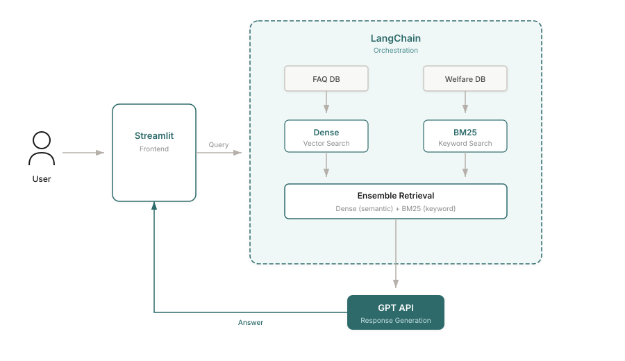
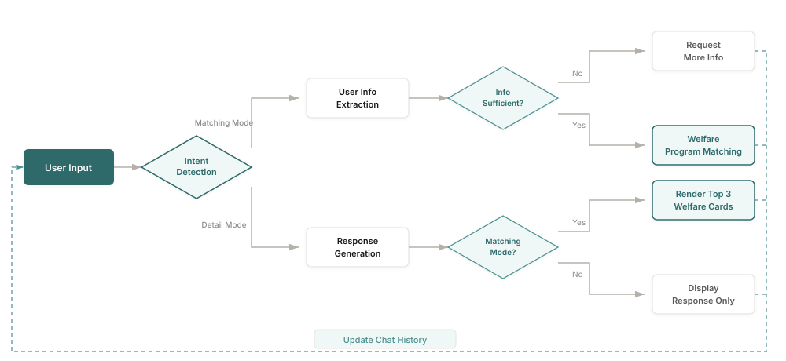

Welfare Compass
A conversational assistant that helps Seoul residents find welfare programs they may qualify for, without forms or filters. It started as my hackathon RAG prototype and is now a team-built LangGraph agent.

problem
Seoul runs more than 300 welfare programs, spread across several platforms and described in dense administrative language. Each has its own rules on age, income, employment and residence, so finding out what you qualify for means reading through many of them one by one.
Existing services leave that work to the user. Seoul Talk, the city's KakaoTalk chatbot, answers with category menus and links. Bokjiro, the government welfare portal, asks users to tick filter boxes and then judge their own eligibility. Neither matches a person's situation against program conditions automatically.
Two figures framed the problem for us: 86% of people who did not apply said they assumed they were not eligible, and 48% of eligible citizens do not receive benefits they qualify for. In van Oorschot's model of welfare non-take-up, this first barrier is self-censorship: people rule themselves out before they ever look.
Sources: 86%, Seoul Welfare Survey 2020. 48%, National Indicators, Ministry of Health and Welfare, 2024.
Phase 1 · Seoul AI Hackathon MVP
my part
Led ideation; designed the RAG retrieval/generation logic and prompts; built the Streamlit MVP.
approach
Talking to people first
Before building anything, I held informal interviews with about 8 peers from my bootcamp cohort: Seoul residents in their late twenties, the age group many youth programs target. They were proxy users, not real welfare applicants, and the interviews were conversations rather than a structured study. Most had never applied for anything. Their reasons clustered into three patterns, and each one became a design decision.
finding"I didn't know I was eligible." Participants assumed welfare was only for low-income households.
decisionProactive matching. The assistant extracts the user's situation from conversation and finds programs itself, so no prior knowledge is needed.
finding"I tried searching but gave up." Information was scattered across Seoul Talk, Bokjiro and district office websites.
decisionOne entry point. We curated about 100 Seoul welfare programs into a single searchable database.
finding"It's not worth the hassle." Long criteria and application forms outweighed an uncertain benefit.
decisionPlain conversation. Users describe their situation in their own words and see what a program offers before committing to anything.
The MVP
The MVP is a Streamlit chat app over a manually curated database of ~100 curated Seoul welfare programs covering housing, employment, living costs and education. A user can type something like "I'm 27 and renting" and the assistant fills in a profile in the sidebar, asks for what is missing, and then recommends programs with short summary cards.

01 · profile extracted from chat

02 · recommended programs

03 · eligibility and how to apply
Retrieval and generation
I chose retrieval-augmented generation over fine-tuning because welfare programs change often: with RAG, an update means refreshing documents, not retraining a model. LangChain orchestrates the flow: detect the user's intent, extract profile details, retrieve candidate programs, and generate an answer grounded only in the retrieved documents.
Dense vector search alone missed relevant programs when users phrased things differently from the policy text. A teammate contributed a BM25 keyword module, and we combined the two as dense + BM25 ensemble retrieval, so both meaning and exact terms count.
Early answers were inconsistent and repeated administrative jargon. I rewrote the prompts so answers stay grounded in retrieved documents and translate bureaucratic wording into everyday language, and checked them against the kinds of questions people actually asked.


After we reached the finals, part of the team wanted to build a full backend and frontend in the remaining time. I argued for finishing a working MVP first, built the Streamlit prototype overnight, and the team agreed to complete that rather than an ambitious but unfinished system.
results
Finalist at the Seoul AI Hackathon, top 20 of 181 teams. One judge's comment: Good topic and planning; this seems like something citizens could actually use right away.
Evaluation scope: the result is a competition placement and judges' feedback. We did not run a retrieval benchmark or a user study, so the effect of adding BM25 was judged on test queries, not measured.
Phase 2 · Team iteration, LangGraph ReAct agent
why a second version
Judges asked why users had to re-enter the same information every session, and that was fair: in the MVP every conversation started from zero. The MVP's pipeline also ran the same fixed sequence of LLM calls for every message, even a greeting, and it used search results to decide eligibility, so a qualifying program that ranked low in search could be missed.
my part
- The LLM/agent pipeline: a LangGraph orchestrator built on the prebuilt
create_react_agent, running GPT-4.1-mini, that chooses tools per turn. - Session-keyed user-profile persistence: the stored profile is injected into the system prompt, because the prebuilt agent keeps no state across turns.
- The
check_eligibilitytool as a factory,create_check_eligibility(fetcher), so the data source is injected: the app passes a database query, tests pass a stub. - A canonical field-name dictionary in the orchestrator prompt, the single reference for every tool's inputs and outputs.
- Two-track integration tests: real LLM with stub tools on every pull request, and real LLM with real tools on targeted runs.
Teammates' work: the MCP search server (BM25 with the Kiwi tokenizer, Chroma, BGE reranker, RRF fusion), the Django backend, the Next.js frontend and the map integration.
approach
The fixed pipeline became a ReAct agent with three tools. The orchestrator reads the conversation and decides what to call: it skips extraction when there is nothing new to extract and skips search for a follow-up question.
extract_infopulls profile fields such as age, region, income and employment from the conversation.search_policieshandles comparison, FAQ and exploration queries through the team's search server. Query rewriting is embedded inside it: as a separate tool, the orchestrator sometimes skipped it, so now it always runs whenever search does.check_eligibilityis a deterministic rule check over the policy database, with no LLM in the path, covering 300+ youth policies synced from the Youth Policy API. Matching no longer depends on search ranking.
Testing an agent without a live stack
Full end-to-end tests, with a real LLM against real tools, are slow, costly and sensitive to API latency, but skipping them risks missing broken contracts between the orchestrator and its tools. So the tests run on two tracks: a real LLM with stub tools on every pull request, which checks orchestration logic and tool-calling contracts cheaply, and a real LLM with real tools on a small set of targeted scenarios. The factory-built eligibility tool is what makes the stub track possible without a database.
One challenge: names that didn't match
During the orchestrator redesign, field names in the design documents did not match the tools' actual output schemas, for example region vs district and income vs income_level. An LLM review of the documents missed it; a teammate's pull-request review caught it. The fix was a schema-check step in every task spec: before implementing, verify field names against the live tool output schemas. The canonical field dictionary in the orchestrator prompt came out of the same problem.
results
The agent, its three tools, profile persistence and the two-track test suite are implemented, and the team version is running as a live demo.
Evaluation scope: correctness is checked by integration tests of the orchestrator and tools. There is no evaluation dataset or user study yet, so I make no claims about answer quality or matching accuracy.
limitations
- The phase 1 interviews were with digitally fluent bootcamp peers. Real applicants likely face other barriers: complex language, trust and digital literacy.
- Neither version has been evaluated on a labelled dataset; retrieval quality and recommendation accuracy are unmeasured.
- The agent uses the prebuilt ReAct agent rather than a custom graph. Some question types trigger several sequential LLM calls, which makes answers slow.
- Phase 2 is a team project in development, not a finished service.